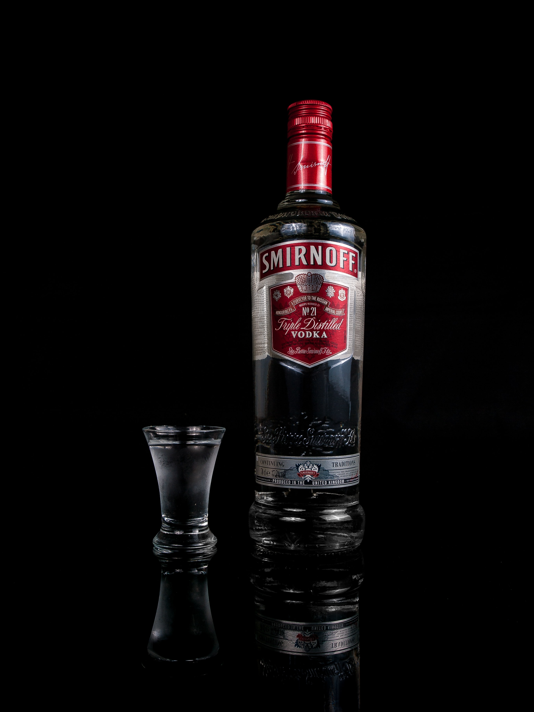
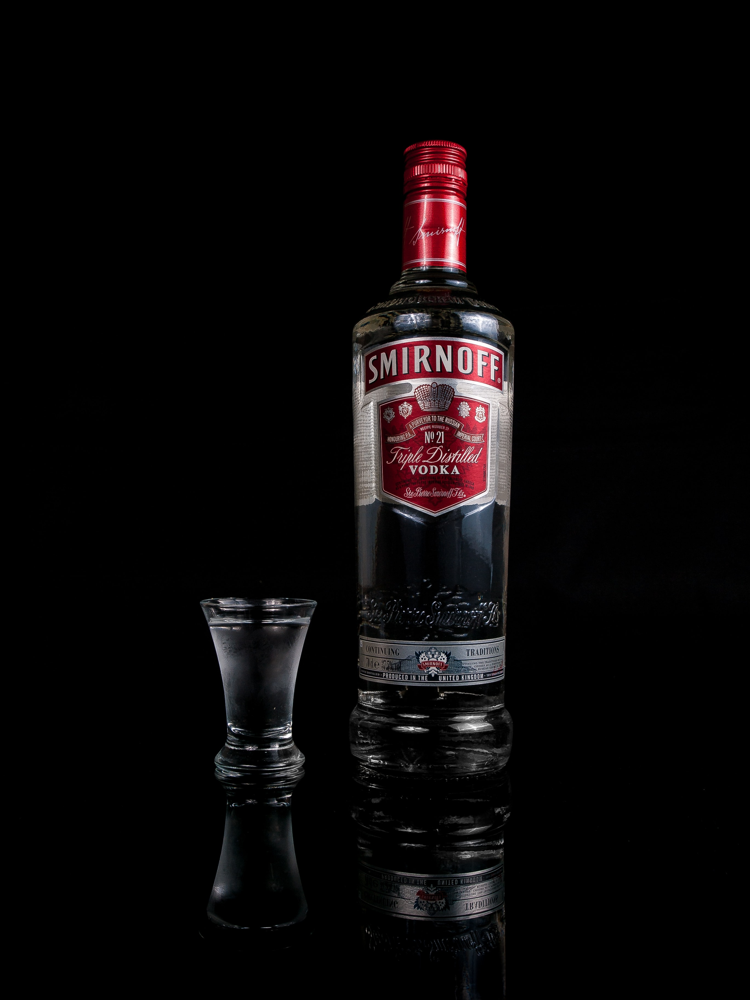

보드카는 슬라브 민족의 국민주라고 할 수 있을 정도로 귀족이나 노동자 할 것 없이 누구나 즐겨 마시던 술이다. 보드카는 12세기 경 러시아 문헌에 지제니스 붜타란 말에서 유래했는데 이는 생명의 물이란 뜻이다. 15세기 경 붜타라 불리고, 18세기 경부터 보드카라 불리었다. 보드카는 무색, 무미, 무취의 3무의 특징을 지닌다.
보드카의 원료는 감자, 고구마, 보리, 밀, 호밀, 옥수수이다.
 
